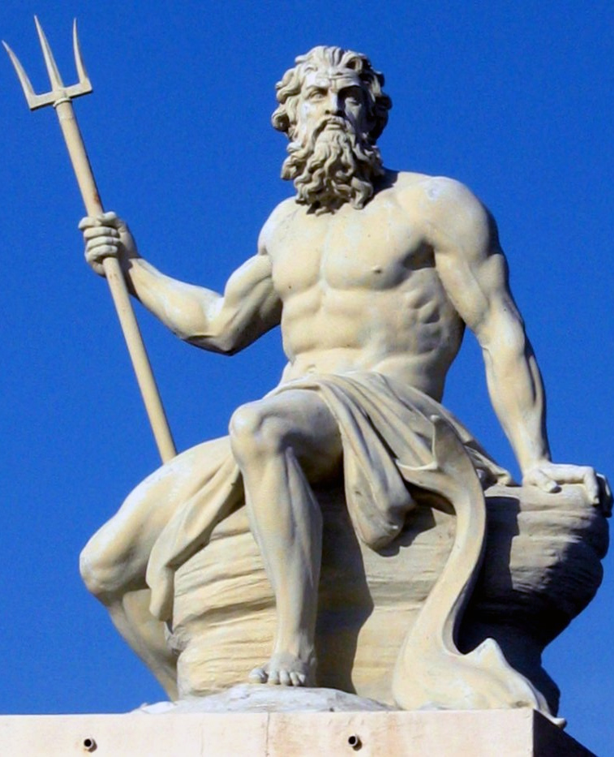
Neptuno
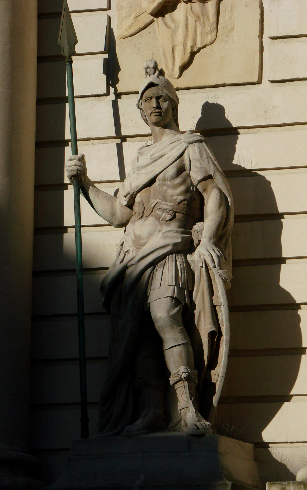
Marte
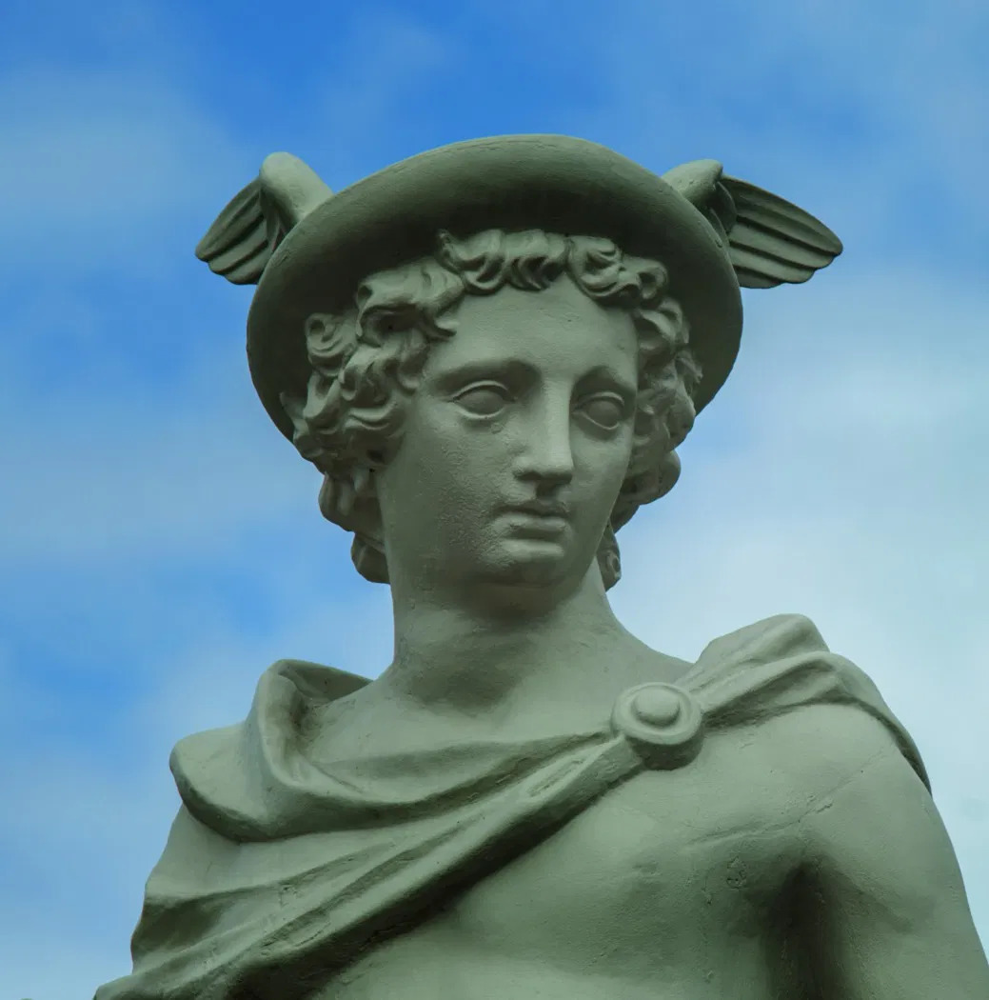
Hermes
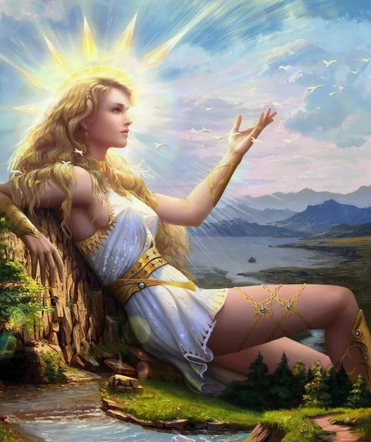
Afrodita
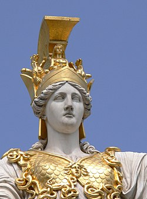
Atenea
 Zeus
Zeus
Saturno
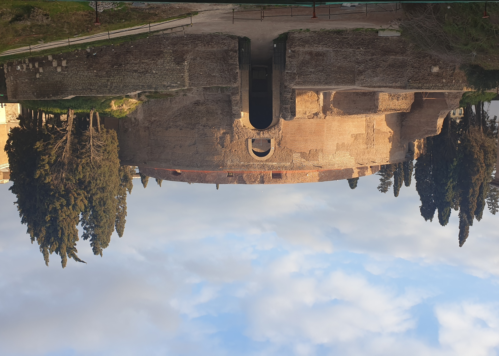
Mausoleo de agusto
 Circo maximo
Circo maximo
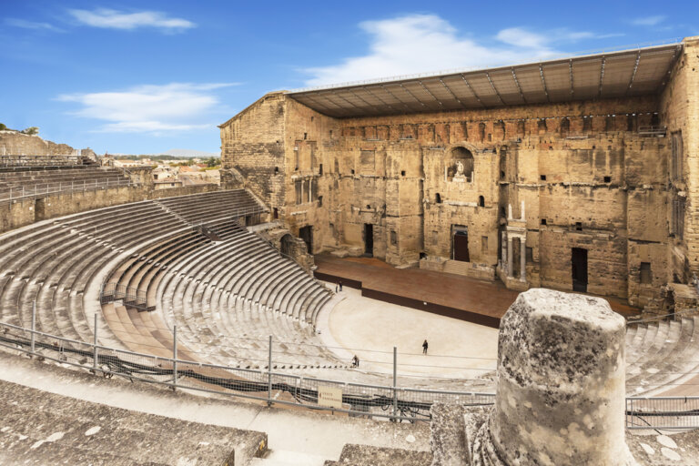
Teatro romano
Torre de pisa
Foro de trajano
Panteon de agripa
Partenón
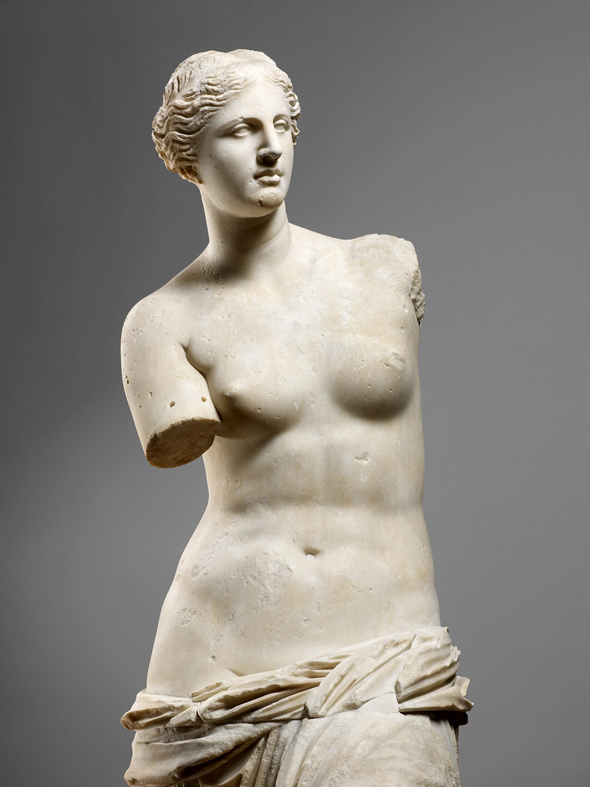
Venus de milo
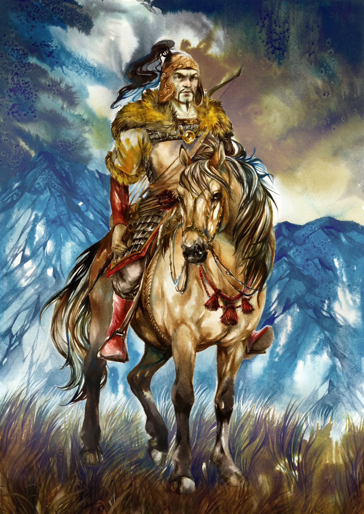
Atila
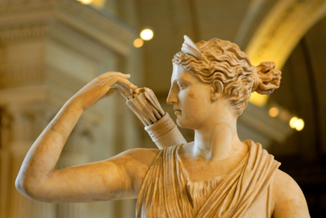
Artemisa
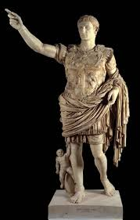
Augusto de prima porta
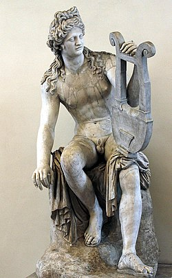
Apolo
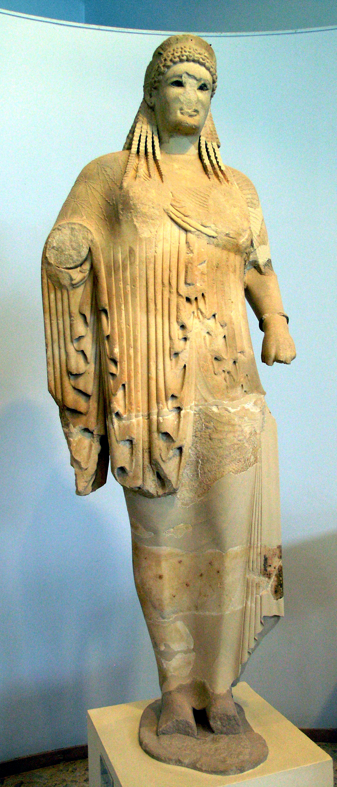
Kore de antenor